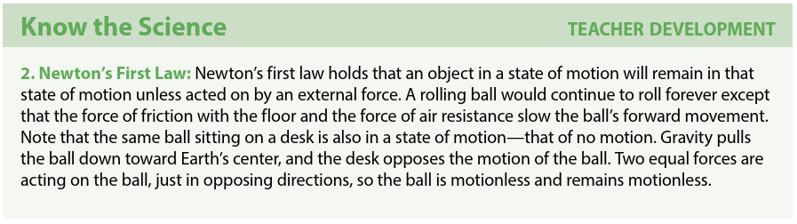

openTXTbook is a free interactive learning platform for alternative education spaces. You can read more here.
Content, and app design & development © Core Knowledge & IDM
Created by creativeTHINKINGdifferent.
Big Question: How can pushes and pulls change the motion of objects?
Anchoring Phenomenon: Sports games are fun because of objects in motion. The driving question we explore in this unit is “How can pushes and pulls change motion of objects?” To answer this question in depth over the course of the unit, students will explore pushes and pulls as they construct a miniature golf course. In answering this question, students explore both visible and invisible pushes and pulls, contact and noncontact forces. They recognize that motion is affected by the strength and direction of pushes and pulls, the characteristics of objects, and the surface on which objects are moved. Students learn how motion changes and develop an understanding that pushes and pulls of all different types are the cause of all changes of movement.
Storyline: Kamal’s scooter rolls to a stop when he stops pushing it forward. Kamal learns about pushes and pulls as he investigates how to change the motion of objects.
Long-term Project: Students will explore pushes and pulls as they construct a miniature golf course.
Note: Introduce the unit by writing the Big Question on the board — How can pushes and pulls change motion of objects? Then ask each student to do a simple demonstration of a push and a pull. For example, they can push a pencil away from them and pull it toward them.
Note: While some advanced students may be able to read words on a given student worksheet, as a general rule students should not be expected or asked to read aloud the text on the worksheet pages. The text in the worksheet is there so that teachers and parents can read it when sharing the worksheet with students.
↯ Download A Scooter Race worksheet.
↯ Download and have students complete Motion worksheet.
Coach students through completing worksheet. Review students work, and add student responses to the question board lists of pushes and pulls.
Ask each student to think of a question they have about the pushes and pulls they have encountered. Add these questions to the question board. ➾ Why do some things move further and faster than others? How can you make something stop moving? Can things move by themselves?
Review student responses in the discussion and on worksheet to determine student understanding of the following concepts:
⚑ Assess Learning Attitude of students.
Big Question: How can pushes and pulls change motion of objects?
Guiding Questions: What do pushes and pulls do? What happens when something moves?
Tie to Anchoring Phenomenon: Students engage with moving objects as firsthand experience with types and causes of motion that occur in sports games and other activities.
Note: Core Vocabulary terms are those that students should learn to use accurately in discussion and responses. During instruction, expose students repeatedly to these terms. However, these terms are not intended for isolated drill or memorisation.
| cause |
contact | effect | touch |
| motion | move | pull | push |
Note: The Language of Instruction consists of additional terms, not considered a part of Core Vocabulary, that you should use when talking about any concepts in this exercise. Students will benefit from your modeling the use of these words without the expectation that students will use or explain the words themselves.
| force |
object |
Note:Students ask and answer questions about their experiences and observations of the cause and effect of different forces and motions.
Have students look at the question board. Lead the class in reading the Big Question that you’ll be answering in this unit — How can pushes and pulls change the motion of objects?
Tell students that, before they can answer the unit’s Big Question about how pushes and pulls change motion, they first need to understand what pushes and pulls are and how they work. In Lesson 1, they will learn about pushes and pulls in order to apply their understanding to the Big Question. Write the Guiding Question where students can see it: What do pushes and pulls do?
Note: Allow students to play on playground equipment and/or use sports equipment for a maximum of ten minutes. Pick a number of activities that will allow students to try out pushes and pulls, such as pushing and pulling each other on the swings or rolling, passing, and kicking a ball to each other. Ask them to choose one activity to observe and gather evidence.
As students explore motion, and ask targeted questions such as the following:
↯ Download and have students complete Pushing and Pulling worksheet.
Some students may benefit from further demonstrating the physical activity of pushing and pulling different objects in order to secure the difference between the two types of forces. A discussion of examples such as wind as pushing and a vacuum as pulling may provide further understanding.
Review student responses in the discussion and on worksheet to determine student understanding of the following concepts:
Note: Science starts when someone asks a question. Encourage students to ask questions about movement as well as the causes and effects of motion phenomena. Record student questions on the question board.
Tell students that they will be designing a miniature golf course later in the unit and that as part of the design, they will need to consider how they want the ball to roll through the different parts of the course. Ask students to think about one way a ball could roll.
⚑ Assess Learning Attitude of student.
Choose a module to continue. Please, go through the modules in order.